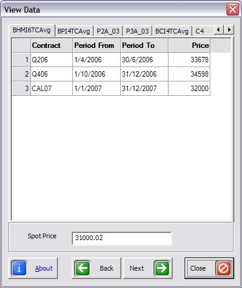
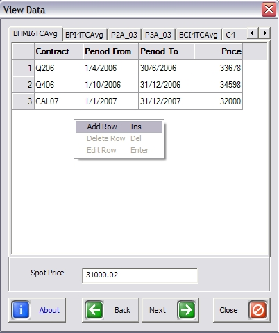
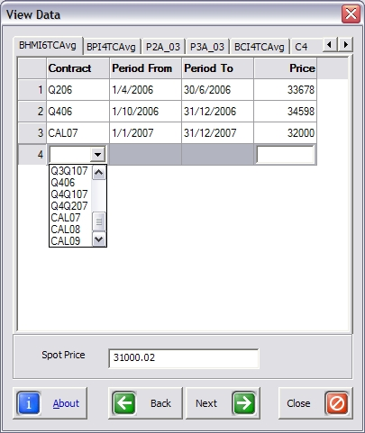

|
providing Shipping
Risk Management Solutions |
Fr8Tools Data Manager
Fr8Tools provides a Data Manager that is used to build and save Forward Curves
for use in the Fr8Tools Excel Templates. The Data Manager greatly simplifies
the whole Fr8Tool experience.

|  |
A simple "right click" of the mouse enables you to add, delete and
edit the data.
|
|  |
Contracts are selected using a drop down menu and the dates are
automatically completed. Leaving only the Price and Spot Price data to be
completed by the user. |
© 2005. FreightMetrics